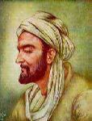

Ibnu Hassan

Syahdan, zaman dahulu kala, ada seorang kaya hartawan, bernama Syekh Hasan, banyak harta banyak uang, terkenal kesetiap negeri, merupakan orang terkaya, bertempat tinggal du negeri Bagdad, yang terkenal kemana-mana, sebagai kota yang paling ramai saat itu.
Syekh Hasan sangat bijaksana, mengasihi fakir miskin, menyayangi yang kekurangan, menasehati yang berikiran sempit, mengingatkan orang yang bodoh, diajari ilmu yang baik, walaupun harus mengeluarkan biaya, berupa pakaian atau uang, karena itu banyak pengikutnya.
Syekh Hasan saudagar yang kaya raya, memiliki seorang anak, laki-laki yang sangat tampan, pendiam, dan baik budi, berusia sekitar tujuh tahun.
Ibnu Hasan namanya, Ibnu Hasan sedang lucu-lucuya, semua orang senang melihatnya, apalagi orang tuanya, namun demikian anak itu, tidak sombong, perilakunya kalem, walaupun hidupnya dimanjakan, tidak kekurangan sandang, namun Ibnu Hasan sama suka bersolek, karena itulah kedua orang tuanya sangat menyayanginya. Ayahnya berfikir,”Alangkah salahnya aku, menyayangi diluar batas, tanpa pertimbangan, bagaimana kalau akhirnya, dimirkai Allah Yang Agung, aku pasti durhaka, tak dapat mendidik anak, mengkaji ilmu yang bermanfaat.”
Dipanggilnya putranya. Anak itu segera mendatanginya, diusap-usapnya putranya sambil dinasihati, bahwa Ia harus mengaji, katanya “Sekarang saatnya anakku, sebenarnya aku kuatir, tapi, pergilah ke Mesir, carilah jalan menuju keutamaan.”
Ibnu Hasan menjawab,”Ayah jangan ragu-ragu, jangankan jalan menuju kemuliaan, jalan kematianpun hamba jalani, semua kehendak orang tua, akan hamba turuti, tidak akan ku tolak, siang malam hanya perintah Ayah Ibu yang hamba nantikan.”
Singkat cerita, Ibnu Hasan yang akan berangkat kepesantren, berpisah dengan kedua orangtuanya, hatinya sangat sedih, ibunya tidak tahan menangis terisak-isak, harus berpisah dengan putranya, yang masih sangat kecil, belum cukup usia.
“Kelak, apabila ananda sudah sampai, ketempat merantau, pandai-pandailah menjaga diri, karena jauh dari orang tua, harus tahu ilmunya hidup, jangan keras kepala, angkuh dan menyombongkan diri, merasa lebih dari yang lain, merasa diri orang kaya lalu menghina sesama. Kalau begitu perbuatanmu, hidupmu tidak akan senangkaena dimusuhi semua orang, tidak akan ada yang mau menolong, kalau celaka tidak akan diperhatikan, berada dirantau orang, kalau judes akan mendapatkan kesusahan, hati-hatilah menjaga diri jangan menganggap enteng segala hal.”
Ibnu Hasan menjawab dengan takzim,”Apa yang Ibu katakan, akan selalu kuingat dan kucatat dalam hati, doakanah aku agar selamat, semoga jangan sampai menempuh jalan yang salah, pesan Ibu akan kuperhatikan, siang dan malam.”
Ibnu Hasan sudah berangkat dikawal dua pengasuhnya sejak kecil, Mairin dan Mairun,mereka berangkat berjalan kaki, Mairun memikul semua perbekalan dan pakaian, sementara Mairin mengikuti dari belakang, sesekali menggantikan tugas Mairun.
Perasaan sedih prihatin, kehujanan, kepanasan, selama perjalanan yang makan waktu berhari-hari namun akhirnya sampai juga dipusat kota Negara Mesir, dengan selamat berkat do’a Ayah dan Ibunda, selanjutnya, segera Ian menemui seorang alim ulama, terus berguru padanya.
Pada suatu hari, saatba'da zuhur, Ibnu Hasan sedang di jalan, bertemu seseorang bernama Saleh, yang baru pulang dari sekalah, Ibnu Hasan menyapa,”Anda pulang dari mana?”
Saleh menjawab dengan sopan,”Saya pulang sekolah.” Ibnu Hasan bertanya lagi,” Sekolah itu apa? Coba jelaskan padaku!” yang ditanya menjawab,”Apakah anda belum tahu?”
“sekolah itu tempat ilmu, tepatnya tempat belajar, berhitung, menulis, mengeja, belajar tatakrama, sopan santun terhadap yang lebih tua dan yang lebih muda, dan terhadap sesama, harus sesuai dengan aturan.”
Begitu Ibnu Hasan mendengar penjelasan tersebut, betapa girang hatinya, di segera pulang, menghadap kyai dan meminta izinya, untuk belajar disekolah, guna mencari ilmu. Sekarang katakan padaku apa yang sebenarnya kamu harapkan.”
Kyai berkata demikian, tujuan untuk menguji muridnya, apakah betul-betul ingin mencari ilmu atau hanya alasan supaya mendapat pujian.
Ibnu Hasan menunduk, menjawab agak malu,”Hamba ingin menjelaskan mengapa hamba besusah payah tanpa mengenal lelah, mencari ilmu.
Memang sangkaan orang begitu karena ayahku kaya raya, tidak kekurangan uang, ternaknyapun banyak, hamba tidak usah bekerja, karena tidak akan kekurangan.
Namun, pendapat hamba tidak demikian, akan sangat memalukan seandainya ayah sudah tiada, sudah menunggal dunia, semua hartanya jatuh ketangan hamba.
Tapi, ternyata tidak terurus karena saya tidak teliti akhirnya harta itu habis, bukan bertambah. Distulah terlihat ternyata kalau hamba ini bodoh.
Bukan bertambah mashur, asalnya anak orang kaya, harus menjadi buruh. Begitulah pendapat saya karena modal sudah ada saya hanya tinggal melanjutkan.
Pangkat anakpun begitu pula, walaupun tidak melebihiorang tua, paling tidak harus sama dengan orang tua, dan tidak akan melakukan, apalagi kalau lebih miskin, ibaratnya anak seorang patih.”
Maka, yakinlah kyai itu akan bauk muridnya.
UNSUR INSTRINSIK
Ø Tema : Bakti seorang anak terhadap orang tuanya
Ø Tokoh :
o Ibnu Hasan
o Syekh Hasan
o Ibu Ibnu Hasan
o Mairin
o Mairun
o Saleh
o Kyai guru
Ø Penokohan :
o Ibnu Hasan = Baik, tidak sombong, kalem, pendiam, penurut
o Syekh Hasan = Baik, Bijaksan, Penyayang
o Ibu Ibnu Hasan = Baik, Penyayang
o Mairin dan Mairum = Setia
o Saleh = Sopan
o Kyai guru = Baik
Ø Latar :
o Latar tempat = Negeri Bagdad, Mesir, Pesantren
o Latar waktu = Zaman dahulu kala, Saat ba’da Dzuhur
o Latar suasan = Mengahrukan, sedih, Prihatin
Ø Plot/Alur : Alur Maju
Ø Sudut pandang : Orang ketiga tunggal
Ø Amanat : Patuhlah kepda kedua orangtuamu, berbuat baiklah kesesama manusia dan janganlah sekali-kali engkau menyombongkan diri.
UNSUR EKSTRINSIK
Ø Agama : Menganut agama Islam
Ø Keadaan Sosial Budaya:
o Pendidikan : Ibnu Hasan baru saja ingin menuntut ilmu pada kyai guru
o Adat istiadat : Sopan, mengasihi yg kekurangan, dll
o Status ekonomi : Syekh Hasan sangat kaya raya.